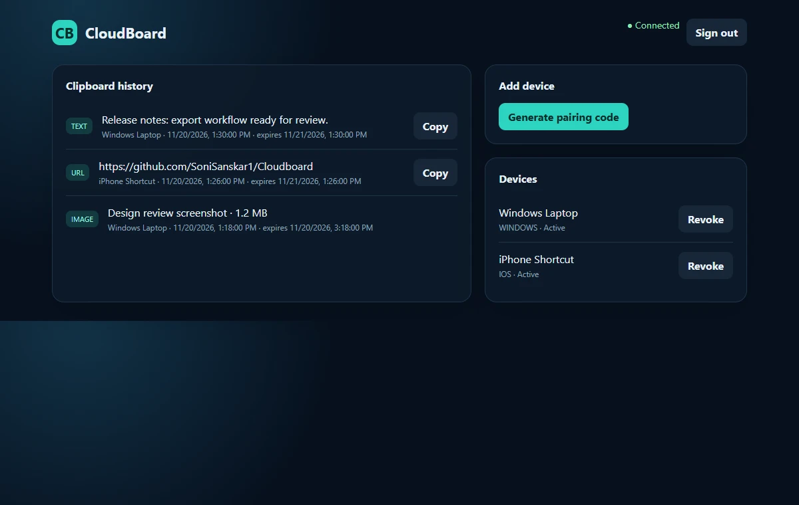
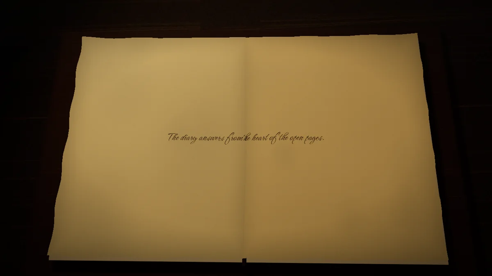

Start with the workflow.
Understand who uses the product and where the work gets stuck. Model the business before choosing the abstraction.
Hospitality billing · Role-based ERPI’m Sanskar Soni. I build reliable backends, complete web products, and useful AI integrations.
active SaaS users
production REST APIs
panel members processed
CSV export · previously 2–3 min
Results from my work at CKP Software Technologies, as documented in my resumes.
Production SaaS, an offline Android POS, cross-device tools, and applied AI. The architecture behind the features. The evidence behind the impact.
A closer look at the product: a web control center and a Windows companion, connected by device-token APIs and encrypted storage.
CloudBoard / Web dashboard

Six-digit pairing connects devices without manually moving credentials.
Review paired devices and revoke access from the dashboard.
24 hours for text and URLs. Two hours for images. AES-256-GCM at the application layer.
A feature is only the beginning. I care about what happens when data grows, the connection drops, or a request arrives twice.
Understand who uses the product and where the work gets stuck. Model the business before choosing the abstraction.
Hospitality billing · Role-based ERPTenant boundaries, explicit validation, idempotent jobs and traceable requests belong in the design from the start.
Azure Service Bus · Signed webhooksTrack the workload and compare the result. Distinguish observed outcomes from design goals and unfinished work.
Export latency · Processing capacityQuery and workload optimization reduced CSV export time from 2–3 minutes to approximately 10 seconds.
~92–94% less waiting time
Calculated from the resume-reported range. Visual scale uses the 180s upper bound; this is not a live benchmark.I’m Sanskar, a software engineer based in India. I work across Java, Python, React and Azure, connecting the details of a backend to the experience on the other side of the screen.
At CKP, I worked on production SaaS and business applications, from secured APIs to deployment and support. Outside that work, I build hospitality tools, developer utilities, and interactive 3D experiments.
Connect on LinkedInMCA · REVA University
Bengaluru · 2023–2025
B.Sc. Information Technology · Amity University
Jaipur · 2020–2023
CKP Software Technologies · Bengaluru
Owned backend delivery and production support for multi-tenant SaaS. Built secured Django APIs, optimized data workflows, and supported Azure deployments and releases.
CKP Software Technologies · Bengaluru
Built a College ERP with role-based dashboards, 20+ secured REST APIs, JWT authentication, database migrations, and React integration.
Scenario-based Apex, Flow, administration, and reporting practice on Trailhead.
Java · Spring Boot
Python · Django REST
REST APIs · JWT · RBAC
React · TypeScript · Next.js
HTML · CSS · Three.js
Capacitor Android
PostgreSQL · Redis · SQLite
Azure · Service Bus
Docker · GitHub Actions
JUnit · Mockito · Testcontainers
Pytest · Vitest
Idempotency · Request tracing
A small experiment beyond the main engineering work. Storytelling, multimodal AI, and a different kind of interface.

Handwriting meets Gemini in a Three.js book. Animated ink and procedural page turns. Fan-made experiment.
Try the diaryBackend and full stack are my core. For AI-focused roles, explore AI Resume Builder and RepoPilot above.